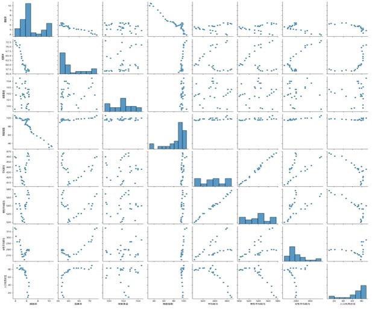
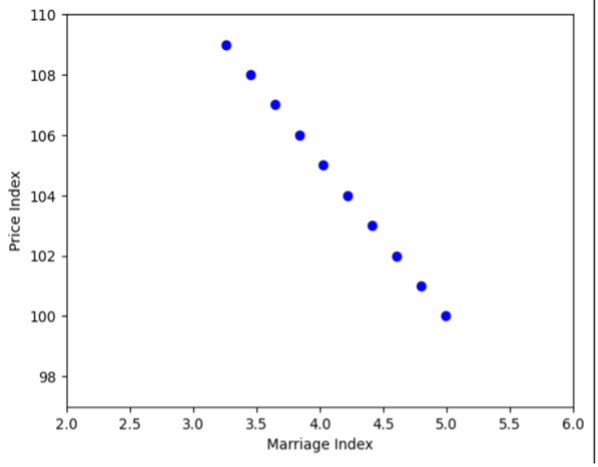
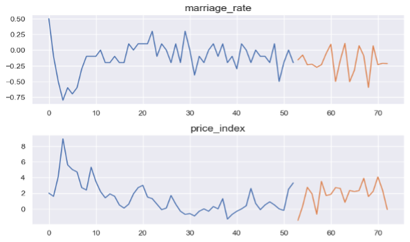
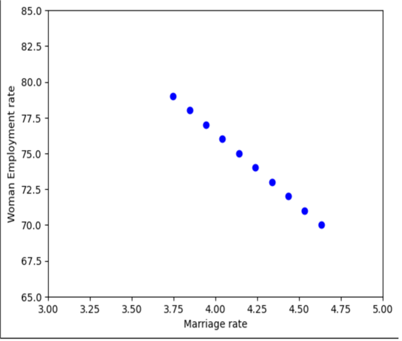
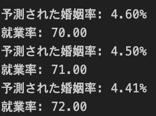

🎓 研究タイトル
婚姻率の低下に影響を与える社会要因の検証（グループ研究）
1. 背景・目的
本研究では、婚姻率の低下に影響を与えている社会的要因をデータに基づいて明らかにし、特に物価指数と女性の就業率に注目した分析を行った。
2. 使用データ・手法
- データ期間：1995年〜2020年
- 分析手法：散布図、重回帰分析、VIF検定、VARモデル、決定木分析
- 出典元：政府統計、白書、国税庁データベースなど
3. 物価指数と婚姻率の関係
- 散布図より、物価指数の上昇と婚姻率の低下に負の相関が見られた
- 
- 重回帰分析では、物価指数の影響が最も大きく、物価が1.0増加すると婚姻率は約0.2%減少する傾向
- 
- VARモデルを用いた将来予測では、婚姻率は今後も減少傾向、物価指数は増加傾向と推定された
- 
- 考察：結婚にかかるコスト意識が婚姻意欲を低下させている可能性
4. 女性就業率と婚姻率の関係
- 女性の就業率と婚姻率の間にも負の相関が確認された
- 
- 重回帰分析の結果、女性就業率が1.0増加すると、婚姻率は約0.1%減少
- 
- 考察：女性の経済的自立が進むことで、結婚の必要性が相対的に低下
6. まとめ
- 物価指数と女性の就業率は婚姻率の低下に有意な影響を与えている
- 就業率の影響が相対的に強い可能性もある
- 今後は他要因（文化、価値観、育児支援制度など）も含めた検証が望まれる
- データをとることが困難であったため今後データが増えたときに精度が上がることが予測される